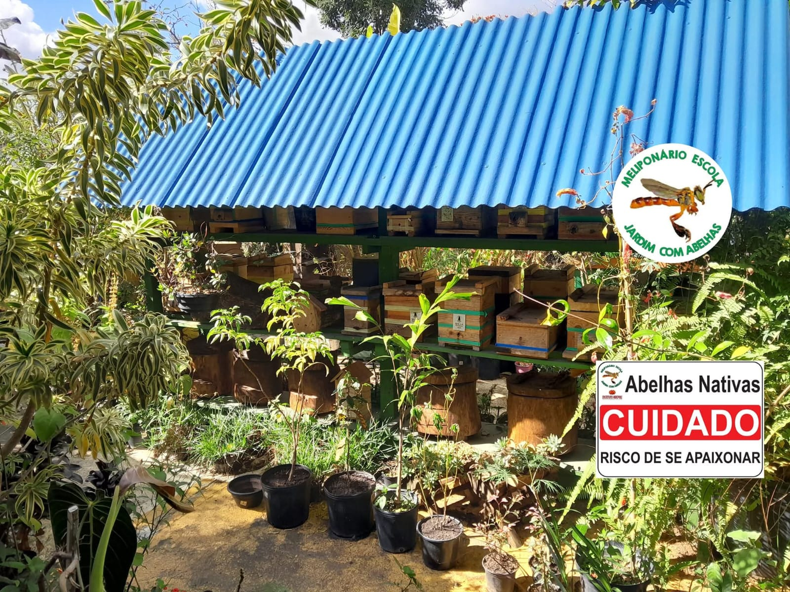
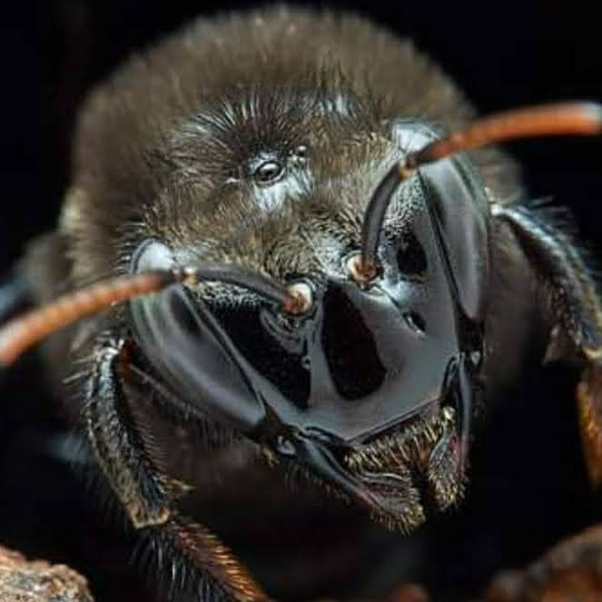

Proteção das abelhas
Desenvolvemos iniciativas para conscientizar sobre a importância das abelhas e incentivar práticas que contribuam para sua proteção.
O Instituto Abepoli desenvolve ações voltadas à proteção das abelhas, preservação ambiental, educação e sustentabilidade.
Conheça nossas açõesCada ação realizada pelo Instituto Abepoli busca fortalecer a relação entre as pessoas, as abelhas e o meio ambiente.
Desenvolvemos iniciativas para conscientizar sobre a importância das abelhas e incentivar práticas que contribuam para sua proteção.
Incentivamos a preservação de ambientes naturais e a criação de espaços favoráveis à biodiversidade.
Levamos conhecimento para escolas, comunidades e diferentes públicos sobre sustentabilidade e conservação ambiental.
Valorizamos o conhecimento científico e técnico para compreender melhor as abelhas e seu papel no equilíbrio dos ecossistemas.
Incentivamos a participação da sociedade em iniciativas que promovam uma relação mais sustentável com a natureza.
Promovemos hábitos e práticas sustentáveis que ajudam a reduzir impactos ambientais e preservar os recursos naturais.

As abelhas possuem um papel essencial na natureza. Por meio da polinização, elas contribuem para a reprodução de diversas espécies vegetais e para a manutenção da biodiversidade.
Por isso, nossas ações buscam aproximar as pessoas desse universo e mostrar que pequenas atitudes também podem gerar grandes mudanças.
Saiba maisNossas ações são construídas a partir de conhecimento, participação e compromisso com o meio ambiente.
Buscamos compreender os desafios relacionados às abelhas e ao meio ambiente.
Compartilhamos informação para despertar uma consciência ambiental.
Envolvemos pessoas e comunidades na construção de atitudes mais sustentáveis.
Incentivamos ações práticas que contribuam para um futuro mais sustentável.
As abelhas fazem parte de um ecossistema essencial para a vida e para a biodiversidade.




Conheça mais sobre o Instituto Abepoli e descubra como contribuir para a preservação ambiental.
Apoie o Instituto